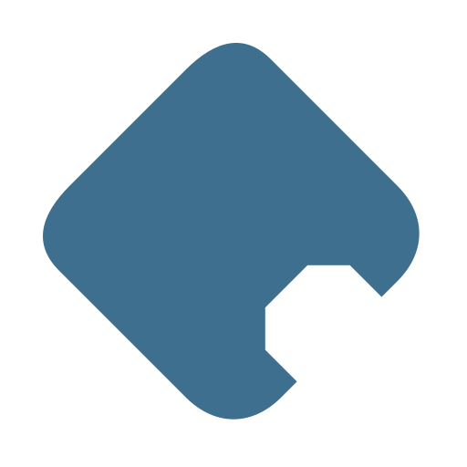
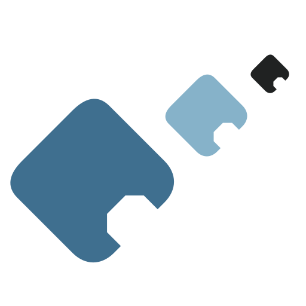
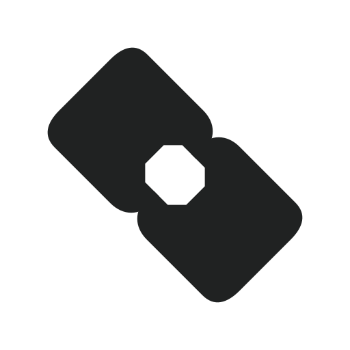
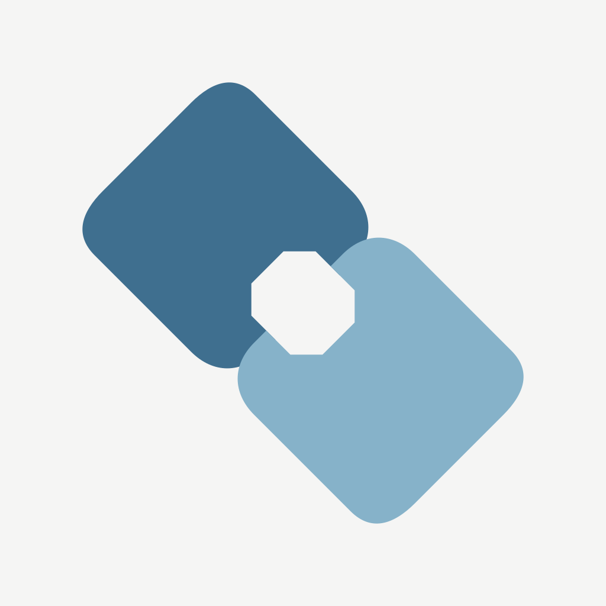

核心隐喻
不再同时画树、资源、订阅、指令和链路。主标只讲“可信节点的定向连接”。

两个同源单元形成一条清晰接缝。它不复述整套架构，只表达 MyFlowHub 最关键的关系：独立节点在可信边界内建立连接。
Apple、Microsoft、Google、Figma、Atlassian 与 Carbon 的共同建议，被转译成这一版的设计约束。规范决定方法，不替我们决定外观。
不再同时画树、资源、订阅、指令和链路。主标只讲“可信节点的定向连接”。
单元、主标和延展图形共享同一套曲率、键口和构造逻辑，而不是三枚风格相近的图标。
应用图标让平台负责遮罩；16px glyph 主动放大接缝，不把 512px 版本机械缩小。
M 负责解释语法，N 承担识别，O 负责让品牌进入大面积版式。三者属于同一个系统，但角色不能互换。

稳定外边界与唯一内凹键口。单独使用容易被读成字母或马蹄，因此只作为系统构件。
两个节点之间的负空间成为记忆点。双色可表达主体差异，单色仍靠轮廓与接缝成立。

同一单元按尺度生长，可用于封面、加载过渡与活动视觉；不作为应用图标或主标。
外轮廓的圆角让工具保持舒适；内部键口和耦合缝保持直线，建立节点、权限和连接所需要的结构感。
两侧严格来自同一条母形路径，通过 180° 对置形成关系。
中央负空间既分隔主体，也使单色版本保持两个节点的判断。
不是数学居中：上方深色单元略重，下方浅色单元补偿视觉重量。
建议四周至少保留标志总高的 25%；锁定后再做最终字标间距校准。
品牌 symbol、平台图标与托盘 glyph 共享造型逻辑，但针对观看尺寸、背景和系统遮罩分别生产。
彩色、单色、反白必须先于平台效果独立成立。


24px 起使用完整标志；20px 与 16px 切换到加宽接缝的 compact drawing。
本页不是最终品牌手册，但已经给出下一轮矢量精修和产品接入前必须遵守的边界。
当前结论：N 已具备进入矢量精修的基础，但仍需通过商标近似检索，并降低它与普通 chain-link 符号的远距离联想。
这是设计研究评分，不是品牌价值评分。小尺寸可用性与系统一致性较强；原创性仍需继续校正。
只采纳可转化为生产约束的部分；不复制任何一家公司的品牌造型。